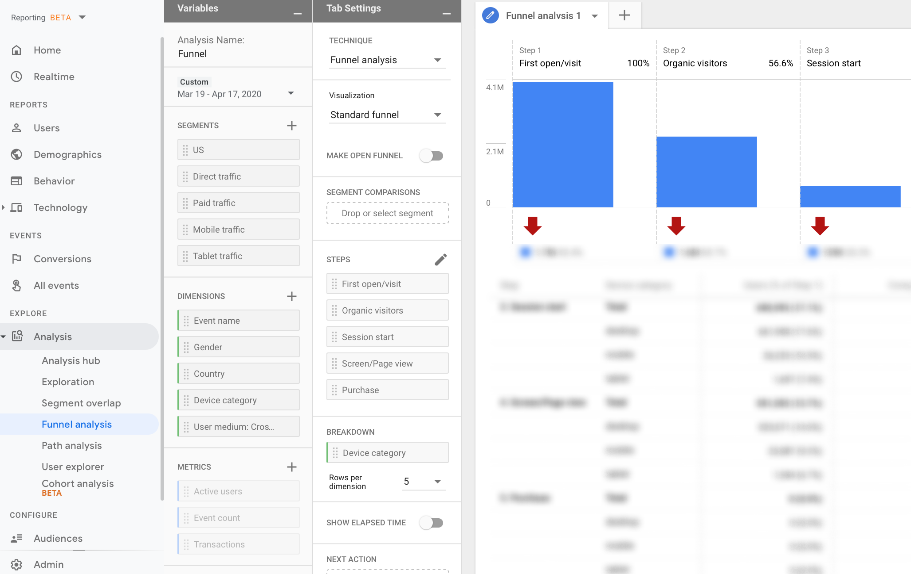
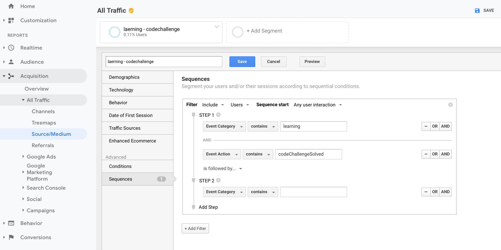
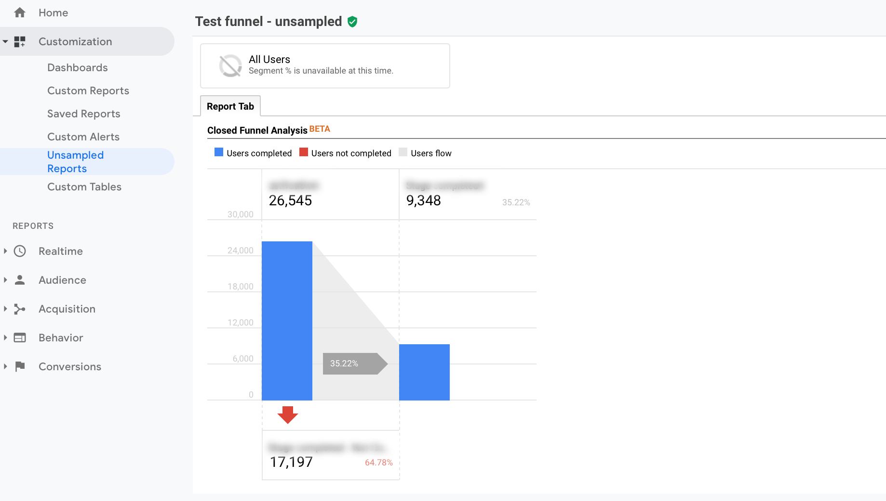
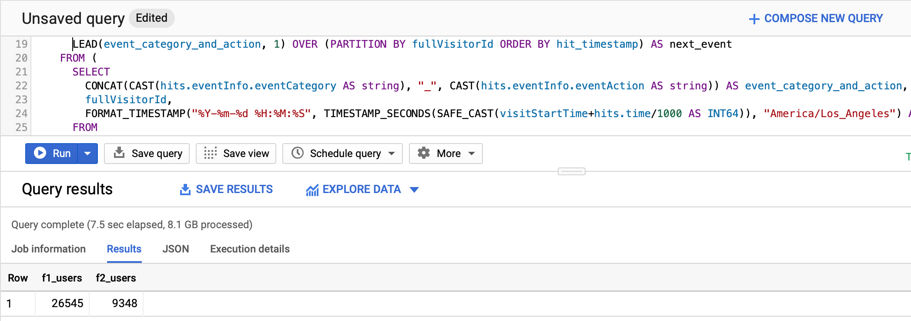

Google Analytics user-based events funnel in BigQuery.
April 24, 2020
There are a few ways to create an event funnel in Google Analytics. The first is the default events flow report but everyone who has tried this report will know that it’s only suitable for the superficial analysis of small resources. When you work with data of a significant size it’s impossible to avoid sampling and therefore, it is challenging to analyze certain events. Moreover, events flow is session-based (like the majority of GA reports), so the user-level analysis couldn’t be done. Most importantly, the report lacks the facility to filter by event category, action or label, suggesting that only the default set of dimensions can be used.

The second option of creating the funnel is connected to the brand-new Web + App property. It contains impressive and promising reports, such as funnel analysis or path analysis. However, unfortunately at this stage (April 2020), these reports also don’t allow filtering by classic GA events parameters, which means that when you start working with them, you need to add custom parameters to your events, which may require a great deal of time and effort to collect the data.

Another option to create a funnel isn’t a report but … a segment. Sequence segments will show you the number of users at each step, as you create them,. The advantage of this approach is that you can filter by event category, action or label. The disadvantages are that user-based segments will only display the data for the first three months of the chosen period and the data can’t be displayed in a separate report, so if you need to update it, you’ll need to recreate the sequence again and again.

There is also one report which can do exactly what we need - funnel in the custom reports section. You can pick all the necessary events and easily build a user-based funnel. The report will work and visualize the data. The only problem is that it’s available in the 360 version only.

But even if you don’t have 360, it’s possible to rebuild the funnel using BigQuery. Please, look at the query below, then we will go through it step by step, starting with the most deeply nested subquery. We will obtain the data using Standard SQL.
SELECT
COUNT(DISTINCT funnel_1) AS f1_users,
COUNT(DISTINCT funnel_2) AS f2_users
FROM (
SELECT
IF
(event_category_and_action = "event_category_event_label_1",
fullVisitorId,
NULL) AS funnel_1,
IF
(event_category_and_action = "event_category_event_label_1"
AND next_event = "event_category_event_label_2",
fullVisitorId,
NULL) AS funnel_2
FROM (
SELECT
event_category_and_action,
fullVisitorId,
hit_timestamp,
LEAD(event_category_and_action, 1) OVER (PARTITION BY fullVisitorId ORDER BY hit_timestamp) AS next_event
FROM (
SELECT
CONCAT(CAST(hits.eventInfo.eventCategory AS string), "_", CAST(hits.eventInfo.eventAction AS string)) AS event_category_and_action,
fullVisitorId,
FORMAT_TIMESTAMP("%Y-%m-%d %H:%M:%S", TIMESTAMP_SECONDS(SAFE_CAST(visitStartTime+hits.time/1000 AS INT64)), "America/Los_Angeles") AS hit_timestamp,
FROM
`pro-tracker-id.ga_sessions_20*`,
UNNEST(hits) AS hits
WHERE
(_TABLE_SUFFIX BETWEEN '200101'AND '200415'
AND REGEXP_CONTAINS (hits.eventInfo.eventCategory, r'^event_category')
AND REGEXP_CONTAINS (hits.eventInfo.eventAction, r'^event_label_1|event_label_2'))
GROUP BY
fullVisitorId,
event_category_and_action,
hit_timestamp
ORDER BY
2,
3)))In the first subquery, we will select four fields - event category, event action, fullVisitorId and timestamp of the hit. Please note that I have merged the event's category and action into one column just for my convenience; you can skip this step, although I find it handy to operate on a unique event name.
In the next subquery, we will use the LEAD function, which allows us to get the next_event field, showing subsequent events for each record. LEAD takes two arguments:
LEAD takes two arguments: LEAD (value_expression[, offset [, default_expression]]). Value_expression defines the column which value should be returned.Offset is a positive integer that specifies the number of rows forwarding from the current row from which to access data. The default value is "1" so I could have skipped it as an argument, but I chose to leave it, as it's easier to illustrate how to get the third event if necessary:
LEAD (event_category_and_action, 2) OVER (PARTITION BY fullVisitorId ORDER BY hit_timestamp) AS third_eventFullVisitorId field is used to divide the data.
The third query contains two IF statements that help to filter the number of events which are considered as the first and the second steps of the funnel respectively.
In the fourth (and last) query, we will calculate the number of unique users with the help of the COUNT function.

If you have any questions, please don’t hesitate to ask in the comments section below.